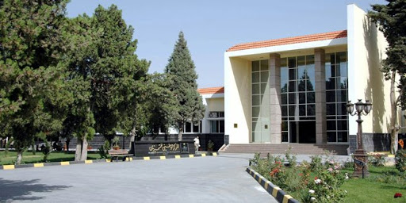
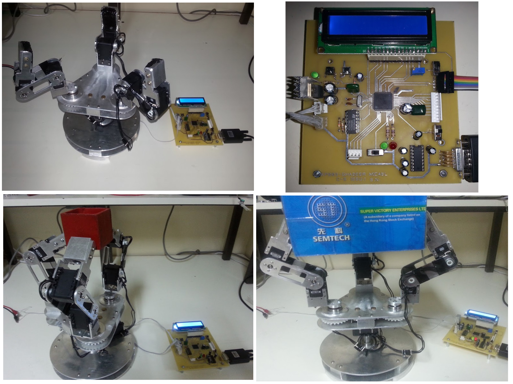

NCD
National Center for Distinguished

In 2009, after getting 307/310 in the 9th-grade exam, I applied for the NCD (National Center for Distinguished) high school.
That year was the first year for the NCD. There were three admission exams, with more than 7500 applicants.
After the three admission exams, only 75 students were accepted, and I was ranked the first among them.
The NCD is by far the best high school in Syria, with advanced teaching techniques that aims to improve the student skills such as self learning, group learning, and research.
HIAST
Higher Institute for Applied Sciences and Technology
After finishing the high school, I applied for the HIAST university (
Higher Institute for Applied Sciences and Technology), which is the best technical university in Syria.
There I studied Mechatronics Engineering, and graduated with rating Excellent, ranked First and graduation average 89.5%, which is the highest in the history of the mechatronics department.
During the study in the university, I did multiple academic projects:
- Fourth year project, in which I fully designed and built a robotic industrial arm with a visual sensing and the ability
of defining the objects' positions. I also built a glove for imitating the movement of a human hand.
The project's video on YouTube.

- Fifth year project, in which I fully designed and built a quad-copter, using a beaglebone black controller.
In addition I built a 3-DoF testing platform for testing the controllers.
Bauman
Moscow State Technical University
After graduation, I was qualified for the russian scholarship to continue my education and get a master degree, followed by a PhD.
In November 2017, I travelled to Russia Moscow to study the russian language for one year (preparatory year).
I started my master degree in robotics and mechatronics in 2018. Over two years I finished my master's project titled "Collective Exploring Using a Swarm of Quad-copters".
During working on my project I published two papers. The first paper "Collision Avoidance algorithm for a quadcopters swarm", is a study of a collision avoidance algorithm developed and implemented during the work on the project.
The second paper "Dynamic Sampling RRT for Improved Performance in Large Environments" is an improvement for the RRT path planning algorithm to improve its performance in Large and complex environments.
I finished my master degree with honors in August 2020.
I continued my education and started my PhD in Bauman university in October 2020. My research is about applying Machine Learning in the robots planning process.